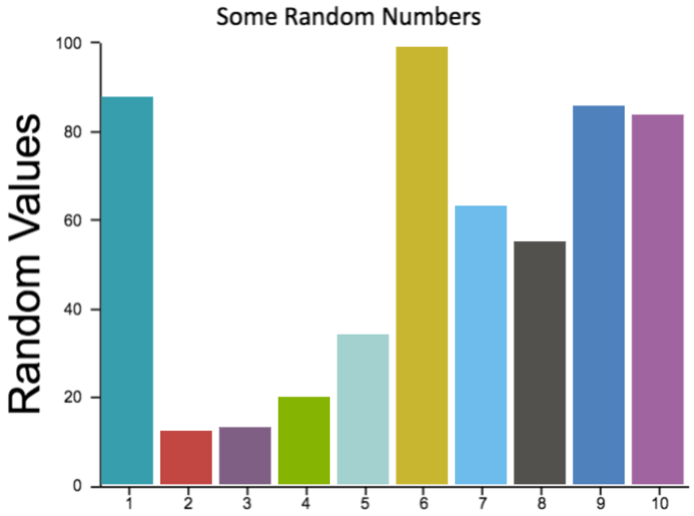

Since 2017, it has been possible to use GAP in Jupyter through the JupyterKernel package. Output was limited to the ordinary text output GAP produces; charts and graphs were not possible.
In 2018, Martins and Pfeiffer released francy (repository, article), which lets users create graphs of a few types (vertices and edges, line chart, bar chart, scatter chart). It also allows the user to attach actions to the elements of these charts, which result in callbacks to GAP that can update the visualization.
This package aims to make a wider variety of visualizations accessible to GAP users, but does not provide tools for conveniently making such visualizations interactive. Where the francy package excels at interactive visualizations, this package instead gives a broader scope of visualization tools.
This is achieved by importing several existing JavaScript visualization toolkits and exposing them to GAP code, as described later in this manual.
The toolkits currently exposed by this package are listed here.
To import the package into a Jupyter notebook, do so just as with any other GAP package: Ensure that the kernel of the notebook is a GAP kernel, then execute the following code in one of the notebook cells.
LoadPackage( "jupyterviz" );
Visualizations of any kind supported by this package are created through one function, CreateVisualization (2.1-3). You can view its complete documentation in for details, but examples are given in this section.
Nearly all visualizations in this package are created by passing data to the CreateVisualization (2.1-3) function as records describing what to draw. These records are converted into JSON form by the json package, and handed to whichever JavaScript toolkit you have chosen to use for creating the visualization.
The AnyChart website contains documentation on how to create visualizations from JSON data. Following those conventions, we could give AnyChart the following JSON to produce a pie chart.
{
"chart" : {
"type" : "pie",
"data" : [
{ "x" : "Subgroups of order 6", "value" : 1 },
{ "x" : "Subgroups of order 3", "value" : 1 },
{ "x" : "Subgroups of order 2", "value" : 3 },
{ "x" : "Subgroups of order 1", "value" : 1 }
]
}
}
In GAP, the same data would be represented with a record, as follows.
myChartData := rec(
chart := rec(
type := "pie",
data := [
rec( x := "Subgroups of order 6", value := 1 ),
rec( x := "Subgroups of order 3", value := 1 ),
rec( x := "Subgroups of order 2", value := 3 ),
rec( x := "Subgroups of order 1", value := 1 )
]
)
);
We can ask GAP, running in a Jupyter notebook, to create a visualization from this data by passing that data directly to CreateVisualization (2.1-3). We wrap it in a record that must specify the tool to use (in this case "anychart") and optionally some other details not relevant here.
CreateVisualization( rec( tool := "anychart", data := myChartData ) );
If you have the data defining a visualization stored in a .json file on disk, you can use the following code rather than rewriting the JSON code into GAP code yourself.
CreateVisualization( rec(
tool := "anychart",
data := JsonStringToGap( ReadAll( InputTextFile( "your-file.json" ) ) )
) );
AnyChart can make a wide variety of charts (area, bar, box, bubble, bullet, column, doughnut, and so on, for over 125 different types and subtypes). Other JavaScript libraries available also have similarly broad capabilities, but we do not include here examples of CanvasJS, ChartJS, or Plotly, because their capabilities and purpose are somewhat similar to that of AnyChart. Though their data formats are different, you can find links to those formats' documentation in the documentation for the function CreateVisualization (2.1-3). So instead future sections focus on four other examples that are unlike AnyChart.
Note that CreateVisualization (2.1-3) takes an optional second parameter, a string of JavaScript code to be run once the visualization is complete. For example, if the visualization library did not support a solid black border, but you wanted to add one, you could do so in subsequent code.
CreateVisualization(
sameDataAsAbove, # plus this new second parameter:
"visualization.style.border = '5px solid black'"
)
This holds for any visualization tool, not just AnyChart. In the code given in the second parameter, two variables will be defined for your use: element refers to the output cell element in the notebook and visualization refers to the visualization that the toolkit you chose created within that output cell (also an HTML element).
Unlike AnyChart, Cytoscape is for the vertices-and-edges type of graph, not the x-and-y-axes type. A tiny Cytoscape graph (just A\to B) is represented by the following JSON.
{
elements : [
{ data : { id : "A" } },
{ data : { id : "B" } },
{ data : { id : "edge", source : "A", target : "B" } }
],
layout : { name : "grid", rows : 1 }
}
Cytoscape graphs can also have style attributes not shown here.
Rather than copy this data directly into GAP, let's generate graph data in the same format using GAP code. Here we make a graph of the first 50 positive integers, with n\to m iff n\mid m (ordinary integer divisibility).
N := 50;
elements := [ ];
roots := [ ];
for i in [2..N] do
Add( elements, rec( data := rec( id := String( i ) ) ) );
if IsPrime( i ) then
Add( roots, i );
fi;
for j in [2..i-1] do
if i mod j = 0 then
Add( elements, rec( data := rec(
source := String( j ),
target := String( i ) ) ) );
fi;
od;
od;
We then need to choose a layout algorithm. The Cytoscape documentation suggests that the "cose" layout works well. Here, we do choose a height (in pixels) for the result, because Cytoscape does not automaticlly resize visualizations to fit their contents. We also set the style for each node to display its ID (which is the integer associated with it).
All the code below comes directly from translating the Cytoscape documentation from JSON form to GAP record form. See that documentation for more details; it is cited in the documentation for the CreateVisualization (2.1-3) function.
CreateVisualization( rec(
tool := "cytoscape",
height := 600,
data := rec(
elements := elements, # computed in the code above
layout := rec( name := "cose" ),
style := [
rec( selector := "node", style := rec( content := "data(id)" ) )
]
)
) );

While D3 is one of the most famous and powerful JavaScript visualization libraries, it does not have a JSON interface. Consequently, we can interact with D3 only through the JavaScript code passed in the second parameter to CreateVisualization (2.1-3). This makes it much less convenient, but we include it in this package for those who need it.
CreateVisualization(
rec( tool := "d3" ),
"""
// arbitrary JavaScript code can go here to interact with D3, like so:
d3.select( visualization ).append( "circle" )
.attr( "r", 50 ).attr( "cx", 55 ).attr( "cy", 55 )
.style( "stroke", "red" ).style( "fill", "pink" );
"""
);

You can create a blank canvas, then use the existing JavaScript canvas API to draw on it.
CreateVisualization(
rec( tool := "canvas", height := 300 ),
"""
// visualization is the canvas element
var context = visualization.getContext( '2d' );
// draw an X
context.moveTo( 0, 0 );
context.lineTo( 100, 100 );
context.moveTo( 100, 0 );
context.lineTo( 0, 100 );
context.stroke();
"""
);

This is the degenerate example of a visualization. It does not create any visualization, but lets you specify arbitrary HTML content instead. It is provided here merely as a convenient way to insert HTML into the notebook.
CreateVisualiation( rec(
tool := "html",
data := rec(
html := "<i>Any</i> HTML can go here. Tables, buttons, whatever."
)
) );
Readers who would like to see a gallery of examples are encouraged to inspect the following files in this package's repository and/or installation directory.
tst/in-noteboook-test.ipynb shows several different visualizations, but can only be loaded in a running Jupyter notebook with this package installed.
tst/in-noteboook-test.pdf is a printout, to PDF, of the previous file, with graphics included (though printing from Jupyter notebooks is not perfect, and thus the formatting of this PDF is not that great).
Please be aware, however, that the tools imported by this package have an enormous breadth of capabilities not shown in that file. The reader is encouraged to browse their websites (cited in Section 1.1) for extensive galleries of visualizations.

generated by GAPDoc2HTML